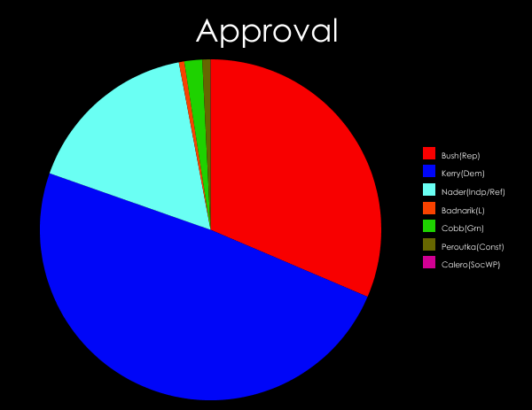

| Candidate | Plur | RV | AV |
|---|---|---|---|
| Bush(Rep) | 50.7 | 40 | 39 |
| Kerry(Dem) | 48.3 | 56 | 61 |
| Nader | 0.38 | 24 | 21 |
| Badnarik | 0.32 | 7.2 | 0.64 |
| Cobb | 0.10 | 8.1 | 2.1 |
| Peroutka | 0.12 | 5.6 | 1.0 |
| Calero | 0.003 | 3.1 | 0 |
| Total3rd | 0.92 | 48 | 25 |

|

|  |
Here is the world's only actual data (as of 2005) about range & approval voting vis-a-vis Badnarik – given in paper #82 here (coauthored with Doug Greene & Jacqueline Quintal).
This is based on a pseudo-election we conducted with real US voters (122 range voters and 656 approval voters) simultaneously with the 2004 presidential election (as an exit poll).
|
|
[Warning: last 2 columns are NY-state and Philadelphia suburbs only, hence different sample than the "plur" column which is nationwide; e.g. nationwide election was won by Bush, but Kerry won NY and PA state. The "Total3rd" row is just the sum of Nader, Badnarik, Cobb, and Peroutka results – which is admittedly somewhat meaningless – but anyhow as you can see it actually would have exceeded Bush's total under range voting. Please see the full paper if you want, e.g, statistical error bars, which are omitted here for simplicity.]
As you can see, under range voting (RV) Badnarik would have gotten 15 times more votes than under approval voting (AV), and 22 times more votes that he actually got under plurality (plur).
Warning: It is not very valid to equate RV scores with "votes." One really should normalize the RV scores before comparing them to Plurality votes, because since RV vote totals can add up to greater than 100% the two are not directly comparable. But for the present election such normalization makes little difference because Bush and Kerry (the two top placers) were the same under either election system and got about the same scores under all elections systems. But since you insist:
Both Badnarik and Cobb had supported IRV during the Badnarik-Cobb debates, a huge mistake by them both because IRV would simply continue to lead to self-reinforcing 2-party domination – the Democratic & Republican strategists must have been rolling in the aisles laughing when they heard the geniuses at the Libertarian and and Green parties had fallen hook, line, and sinker for IRV. (See this, this, and especially this for more understanding of hooks and sinkers.) Later I heard from two Libertarian party officials that Badnarik moved away from supporting IRV=Instant Runoff Voting after it dawned on Badnarik that approval voting was better.
Excellent move, but the table shows Badnarik still has a factor 15 further to go in his own favor by endorsing range voting (plus range voting is a better system objectively anyhow than approval voting).
If this data doesn't get your/his attention, I don't know what will! If you voluntarily sacrifice a factor of 15 in pro-Badnarik votes by supporting AV rather than RV, it's like you have a death wish. (Worried about the nonlinearity bogeyman?) Few politicians make that bad a mistake in their political lives. So I hope this data will end the comedy of errors.
And in fact, this is not just about Libertarians. Every third party is helped by range voting (the data above shows) and not helped by IRV and especially not by the present plurality system. By huge factors. Hence we can reasonably expect to get unified third party support, and that would hopefully be enough driving force to actually change something – for example the Iowa 2008 caucuses in which the major parties will also find it to their clear advantage to adopt Range Voting.
(We now are happy to report some progress: Badnarik's running-mate Campagna endorsed our organization and range voting in September 2005, and Badnarik himself later provided an endorsement, but the Libertarian party as a party as yet has not provided an endorsement of Range Voting.)
Score voting is really at its philosophical core an immensely libertarian voting system. It is all about capitalism, sort of. You give the voters the opportunity to express themselves maximally by voting any numbers they want for each candidate (the "free market") with minimum restraints (minimum "annoying government regulation" like demanding all the numbers must be 0 or 1 only, or demanding only one of them is allowed to be nonzero, or demanding they be the integers 1,2,3,...,N in some order) and by golly, the experimental results show that it works! This fact is kind of a triumph for libertarian principles: Score voting is the uniquely best voting system for society among all common single-winner proposals, as measured by the "Bayesian regret" yardstick based on measurements from millions of computer-simulated elections. (The papers that did these simulation studies are reachable through the links section... e.g. see paper #56 here).
Given this, would be very ironic for libertarians not only to refuse to accept the only hope to save them – but also one that springs directly from their own principles!
The USA's immense and permanent 2-party domination is a consequence of the plurality voting system and Duverger's law. In any voting system in which Duverger's law holds (i.e. plurality, IRV voting, and all Condorcet systems with strict rank-orderings as votes), third parties are going to be permanent doormats. And the rest of us consequently are going to suffer from massively reduced voter choice, massive idea-deficit, and massive quality deficit in our government. Forever.
So in summary, the question for Libertarians when they consider "should we support score voting?" really is "do you like survival?" If you think survival is pretty important, then range voting should be your top priority. And I mean top. More important than every single other issue.
So join CRV now because it is the group pushing for score voting.
{kind=link}